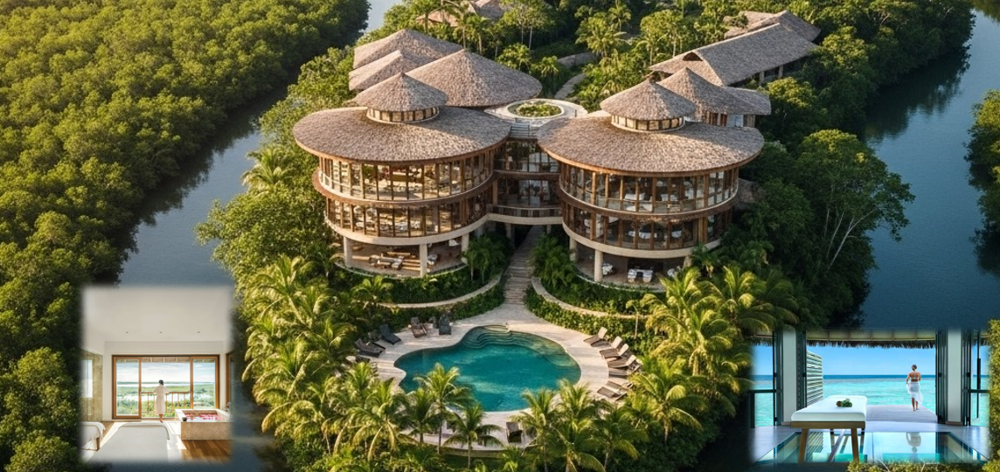
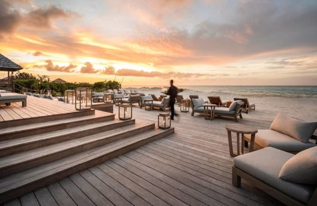
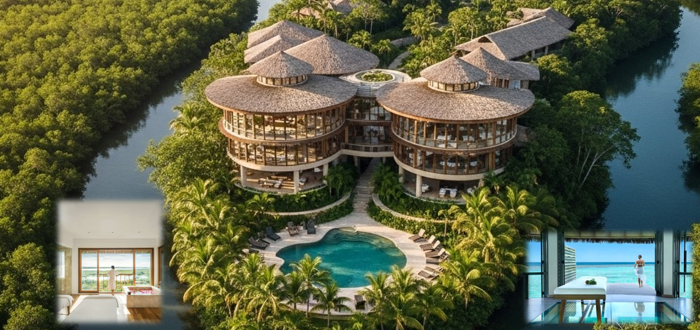
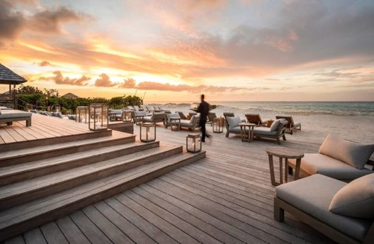

Una Invitación a lo Eterno
En un mundo que grita por atención, hemos creado un lugar susurro. Isla Porcada no es un escape, es un retorno a lo esencial. Aquí, el tiempo se detiene no para aburrir, sino para permitirte escucharte.
Adquirir una villa aquí no es comprar una propiedad. Es asegurar un legado, un refugio para su linaje y un lugar donde el alma puede encontrar su verdadero norte. Es la única inversión que aprecia en valor mientras renueva su espíritu.
 


